Chili Oil


A write-down for David and anyone else that cares
The mandatory recipe tostón intro
Last December I had one of those days that I got an annoying idea for a project and I can’t get it out of my head until I do it.
There is this recipe that I refined during the last years of some delicious chili oil - Originally started from the crude directions the friendly and talkative server at a Cantonese restaurant near Plaça Universitat gave me - And that we always keep stocked at home because it’s delicious and elevates everything.
Hungry, 3 a.m. and only a sad bag of Mercadona instant noodle soup at home? How about a spoon of chilly oil on top of it and it’s suddenly a Malatang-inspired delicacy?
What was I saying? Ah yes, the annoying idea. What if instead of making the usual liter or so I went and made an entire oil jar out of it for friends and family? I said to myself… I had yet not realized the logistics of manipulating 5 Liters of boiling oil.
So yeah, long story short, after an oily, hot and fragrant afternoon, I had around 30 jars of some delicious sauce to give away like I’m a friendly Evangelist giving bibles at the front of a high school.
Ingredients
I’m going to write everything for a 1L of oil, this way the reader can apply their advanced math skills to multiply (or even divide, if we are in front of a genius!) to fit the amount of oil they want to get. Just be mindful that you have a pan or jar big enough for it, as it will be more than 1L by the end of the recipe.
Dry ingredients
- 200g Chilli Flakes (see notes).
- 30g Sesame seeds.
- 1 teaspoon salt.
- 1 teaspoon sugar.
Aromatic Oil
- 1L neutral oil (see notes).
A selection of the following spices that you want. I’m going to put a 🫑 emoji by the ones I always use, the others I have used on occasion and I know work well. I recommend doing the same, but everything is optional and can be adapted to your taste.
- 2 teaspoons Sichuan Peppercorn. 🫑
- 3 pieces of Star anise.
- 3 pieces of Cassia or Cinnamon.
- 4 Bay Leafs. 🫑
- 150g Scallion Greens. 🫑
- 50g Cilantro.
- 150g Thinly sliced onion. 🫑
- 100g Ginger, in slices. 🫑
- 2 or 3 Garlic pieces. 🫑
Finishing
- 50ml of Baijiu (for authenticity) or other flavorless alcohol like Vodka.
Notes on the chili flakes
Pick the brand and cultivar that fits your spice tolerance level and personal taste. You don’t need to prove anything to anyone. We like it with some kick but without making it a masochist fantasy, but the brand that we use comes in smaller bags since I needed a big amount for this recipe (by this point I was starting to realize the magnitude of the tragedy) I had to go for a different one that ended up being very mild.
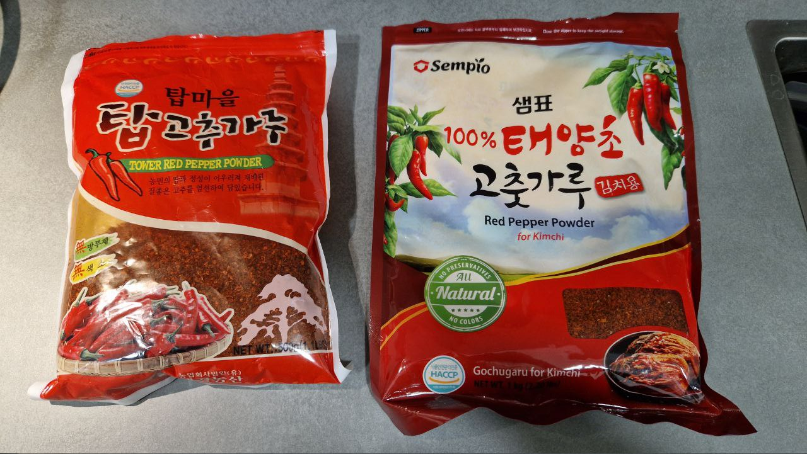
The small bag on the left is the brand I usually use, I can recommend it, good flavor. If you dislike spiciness and want something more on the toasty notes, the right one is a good option. The booth can be found in most import stores in the city. Maybe you need to look for them in the Korean section if you don’t find them with the dried goods.
Notes on the oil
Ideally, you want to use here a high smoke point neutral flavor oil. A good quality refined Sunflower oil is a great option. It has no flavor and a 230ºC smoke point, which makes it perfect for high-temperature work. We are going to (Spoilers!) heat the oil to 180º during the recipe, so you need to avoid oils that burn at lower temperatures. This includes Butter, Lard, Coconut oil, unrefined oils like Corn, Peanut or Flaxseed, and also unrefined Sunflower oil (So be careful when buying sunflower seed oil that you get the right one!).
You could even use olive oil (in this economy?!) but do not use Extra Virgin Olive Oil (the first time I say this in my life) as it has a low smoke point, you want to use at least Virgin Olive Oil or just regular Olive Oil. Be mindful that olive oil has a flavor, so the final product will show it.
Equipment
- A pot or wok that can fit all the oil you will use plus extra space for the spices.
- A heat-resistant jar or plate that can fit all the oil plus extra space for the chilis.
- A spatula or slotted spoon that can resist high temperature.
- A scale for measuring ingredients.
- A spoon!
- The only special equipment that I think will make your life easier is a kitchen thermometer.
About the kitchen thermometer. You can follow this recipe without it, but I think a kitchen thermometer is going to make your life simpler. Not only are you going to reduce your chances of burning the product, it’s also going to help you achieve consistent and replicable results.
I currently use an IKEA brand one that has a probe and a magnet, this way I can just put the probe into what I’m measuring, stick the unit somewhere else, and use the alarm that will warn me once I’m getting close to the temperature I selected. It’s very handy, but also on the expensive side. My first kitchen thermometer was one I got for less than 2€ in a chino and was a bit slow, but totally worked! Just try not to drop it in!
The recipe
Finally, we got here! Do you have everything? Now for the easy part, cooking! (please ignore the state of my kitchen, these photos and posts were never meant to be sent to anyone, so I did not bother to wipe every splash of the cooking process before the picture).
I recommend you read the recipe at least once entirely before starting to cook, I tried to remove any circular dependences, but this entire post is re-formatted from my notes and it was not originally thought of as a guide, so I might have left something in a weird order.
The dry ingredients
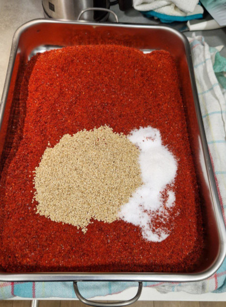 Start by weighing all the dry ingredients and dump them in a heat-resistant container that is at least the same volume as the oil + the dry ingredients. If you can choose, wide is better than tall, you want as much surface of the dry ingredients in the open as possible.
Mix them well with a spoon or with your hands. If you use your hands, try to touch your eyeballs afterward for a funny effect.
The aromatic oil
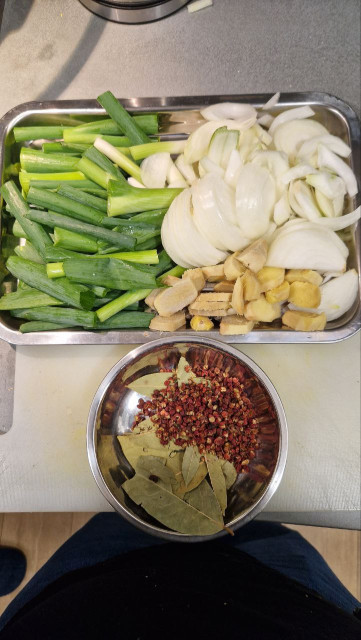
Now we are going to prepare a dual-purpose aromatic oil/air freshener.
Measure all the Aromatic oil ingredients, dump the oil into your pot and clean the vegetables. You want to cut them in chonky pieces, a size where they have enough surface to release all the flavor but not too small so they will be a nightmare to remove (Leave that job to the peppercorns lol, if I had a spice ball I would use it, but I do not, so if you are on the same situation, get mentalized because the karate kid training is coming)
{kind=link}
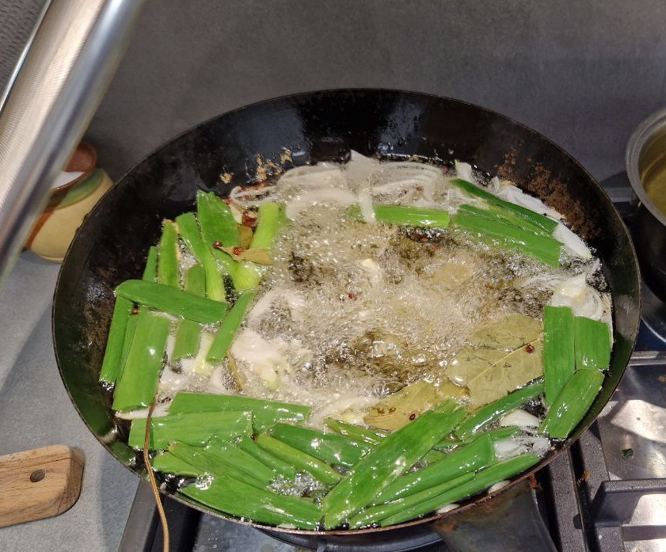
Start warming the oil and once it’s hot, add all the prepared spices and fry it for a good while, mix from time to time to infuse the aroma of the ingredients. Be careful not to let them burn, it’s better to have this process take longer than to end up with bitter oil that you will need to throw away.
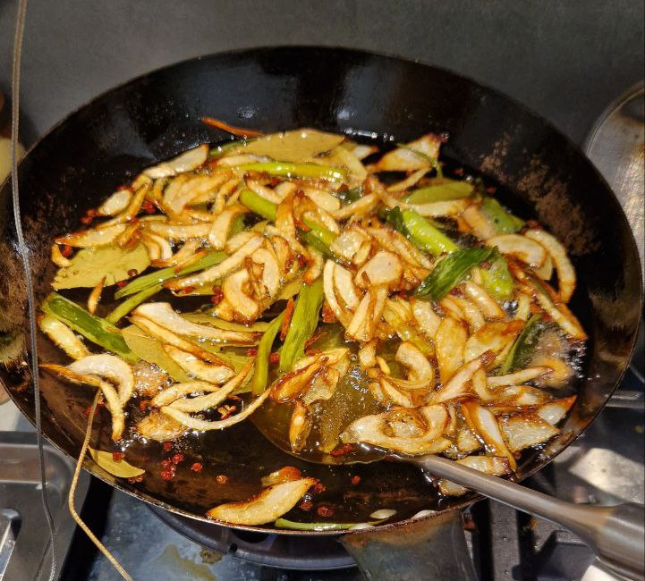
After a bit, all the fresh spices will look golden and your home is going to smell amazing (see, I promised). Turn the fire off and carefully remove all the ingredients with a slotted spoon, trying to keep as much oil as you can in the pan. For any other smaller spices left (I’m looking at you, peppercorns) you can use a small strainer or some chopsticks to pick them out (Man who catch peppercon with chopstick accomplish anything).
You can throw them away, they already released their flavor. But if your pet is cholesterol, you can eat it, it’s pretty much tasteless by this point.
Now is a good moment to take a break.
Mixing it all
First of all, with the oil not too hot, we are going to take around 20% of it (about 200mL for the Liter of our recipe) and wet the chili mix with it. Mix well so all chilis are humid. This is an Aina Patented Tip (Aina-Patented-Tip™️) to avoid the chilis of one side acting as a barrier and burning before the rest.
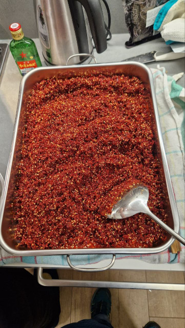
Now let’s get to the by now hopefully free of solids oil. Stick your thermometer in and we are going to warm it until it is 180ºC hot. Try to get as close to this temperature as possible. A much lower temperature won’t toast the chilis properly, a much higher temperature will burn them.
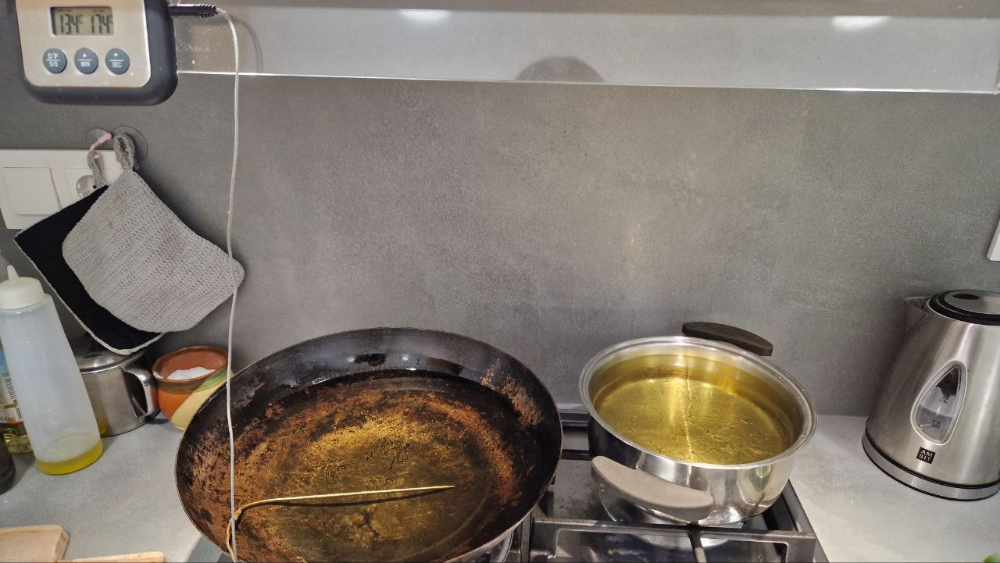
Once you reach it, turn the fire off, wait some seconds to make sure your thermometer does not lag and your oil is not too hot, and carefully pour it on top of all the wet chillis before it gets too cold. If you are using a sane amount of oil, you can probably just carefully grab the pot and dump it AWAY FROM YOU! on the chilis.
I’m not joking here, I would be very sad if you managed to burn yourself in this step.
If you need to deal with large amounts, I found it useful to use a long-handle saucepan as a large-capacity spoon, to move the oil from one pot to the other.
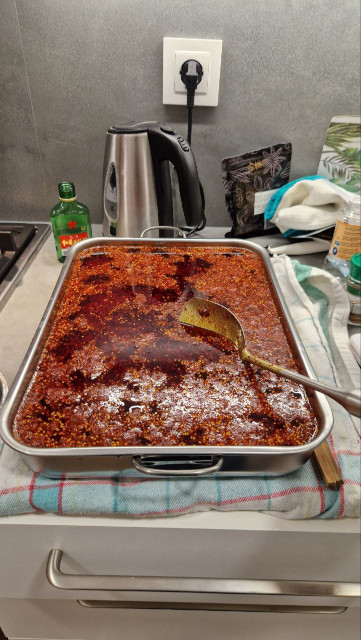
It will make a sizzling noise and smell toasty and amazing. Carefully use a heat-resistant spatula to move around the solids a bit to make sure the hot oil touches them all.
Finishing touches
Once you are done enjoying the smell, pour the Baijiu or alcohol of your choice on top of the hot oil. It will make a cool noise as the alcohol instantly evaporates while leaving the aroma behind. This is for me the coolest part of the process, I just find the bzzzzzz so satisfying… Or maybe it’s the alcohol vapors affecting my judgment?
Cover the oil and now wait at least overnight. During this time the color of the oil will change from a reddish one to a blood red one and the chillis will absorb oil and get plump and big.
Bottling
This is a sauce made from dry ingredients all fresh ingredients have been removed and any water has been evaporated away by this point, so it will hold great at room temperature for months without any worry of bacterial growth. But be mindful that it includes sesame and the oils of the sesame can start to become bitter at room temperature from 6 months after cooking, so if you think you won’t have used it by the time, you can refrigerate it with no big downside apart from using fridge space and, depending on what oil you used (Olive for example), a change of texture that will revert once it’s temperature increases.
If you are a sane normal person, you can at this point just put the oil in a jar or whatever you want to use for storing it, maybe you already prepared it in the final package if you are smart enough.
If you are a deranged human too, you will probably have a ton of jars to divide the product between, good practice is to run them through a high-temperature dishwasher cycle to clean them. As I mentioned, no need to autoclave or any more advanced forms of sterilization for this one.
This is what a sane person’s dishwasher looks like:
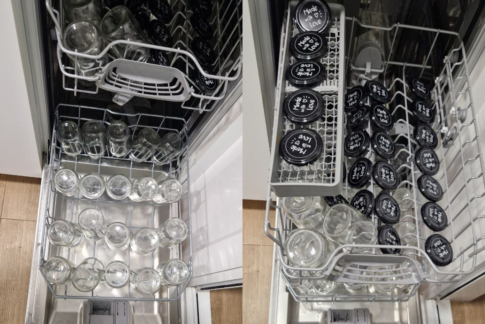
Before bottling, make sure the jars are completely dry, any water left will precipitate to the bottom of the oil and it will be difficult to remove and become a health concern.
Then, with a big spoon, you are going to fill every jar, making sure to mix well the main container before every spoonful, as the chilis precipitate very quickly, so you end up with as close as possible to an equal distribution of oil to solids in each jar. This will get messy.
*have a small panic attack*
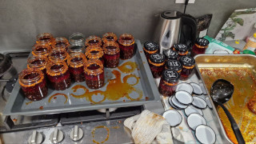
Do not worry too much about making a mess, it’s unavoidable. If you are going to keep the jars closed for some time, use a towel soaked in a mix of water and white vinegar to wipe out any solids from the screw before closing it, this way you will better avoid leaks and other issues during storage.
Once you are done, you can use a towel with some dishwasher soap on it to wipe the outside of the jars while you run them under warm tap water, this will get rid of any oil residue that will be on the outside.
Let the jars dry and you are done!
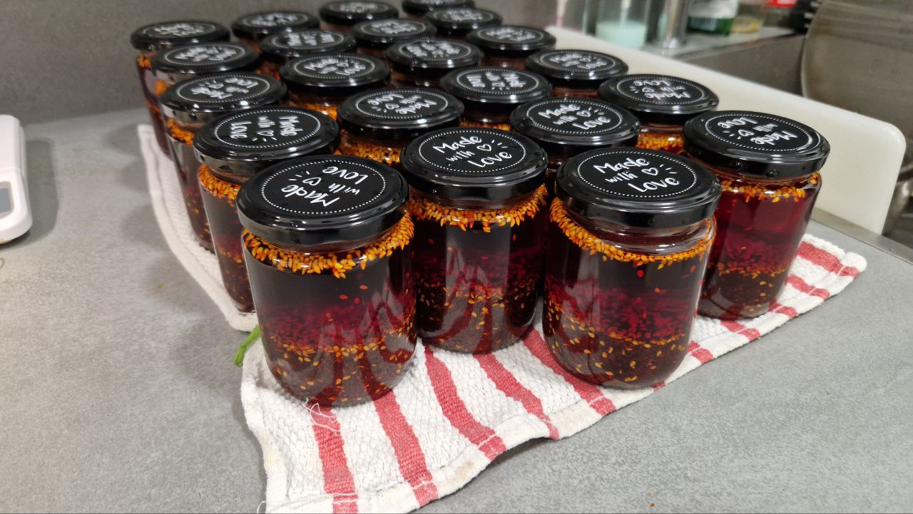